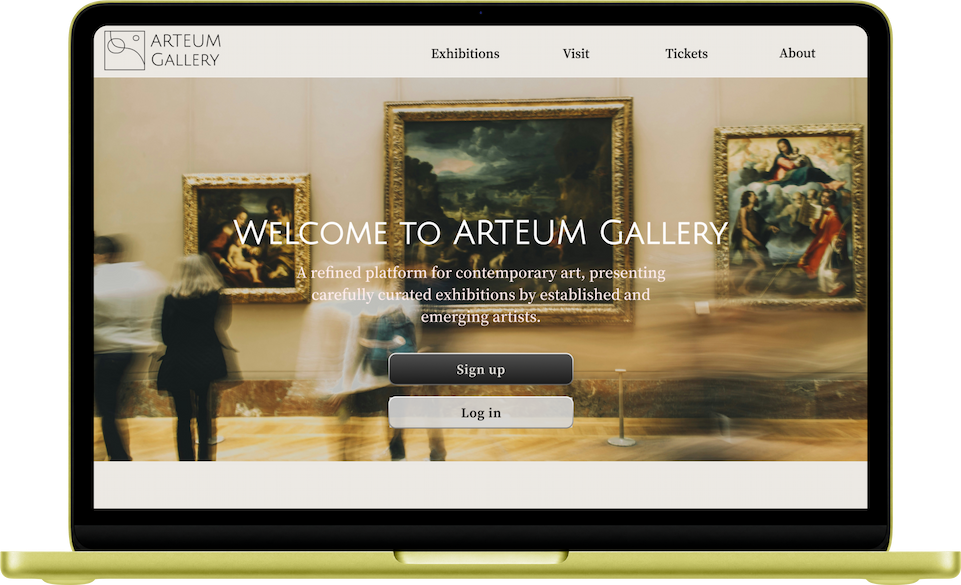

UX/UI CASE STUDY
Bringing the Arteum experience from mobile to desktop through responsive and accessible design.

Arteum Web was created as a natural extension of the Arteum Mobile application. The goal was to adapt the mobile experience for larger screens while preserving the simplicity, accessibility, and visual identity established in the original product.
Designing for desktop required more than simply scaling up mobile screens. The challenge was to rethink layouts, navigation, and content hierarchy while maintaining a familiar and intuitive experience across platforms.
The web version was built using a responsive design system that translated existing mobile components into flexible desktop layouts. The focus was on consistency, accessibility, and improved content visibility.
A key objective was ensuring a seamless experience across devices. Layouts were adapted to different screen sizes while preserving usability principles, navigation patterns, and visual consistency established in the mobile application.
The final solution successfully translated the Arteum experience to desktop while maintaining a consistent visual language and accessible user journey. The design balances familiarity with the advantages offered by larger screens.

This project strengthened my understanding of responsive design and demonstrated the importance of adapting experiences to different platforms rather than simply scaling existing interfaces. It reinforced the value of consistency, flexibility, and accessibility in cross-platform design.